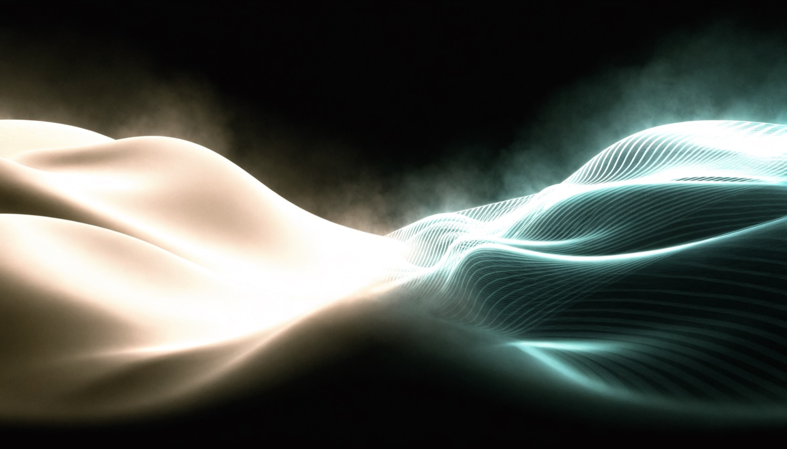
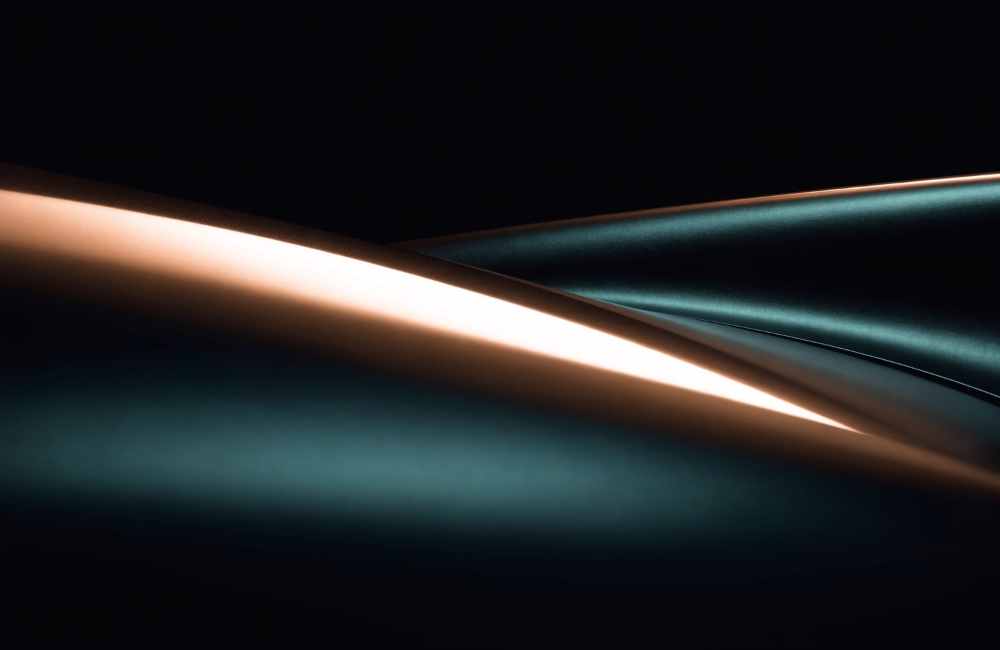
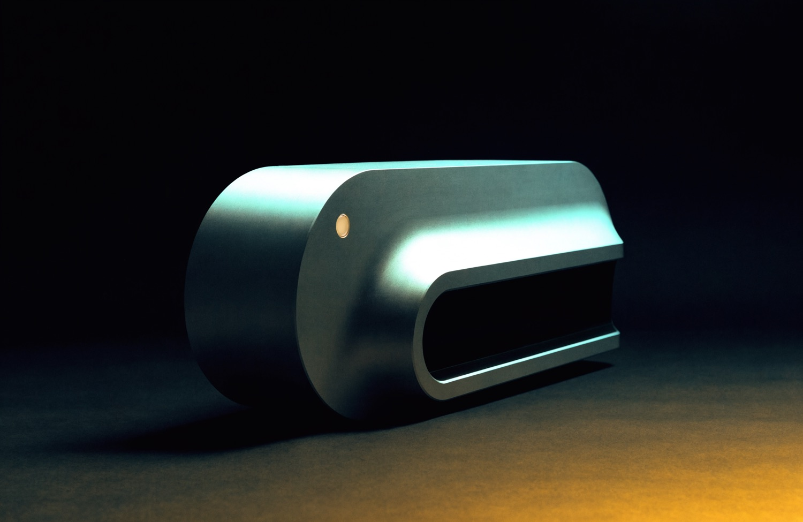

Designing the space between people and machines.
Sanjay Chauhan. Senior product designer at ZERO, working in Mumbai. Engineer turned designer, which mostly means I care whether the thing can be built.
An AI coworker that sits beside you, not above you.
ZERO is an AI-native simulation platform. People do real work inside real job scenarios with an AI coworker next to them, build a portfolio out of that work, and get hired on the proof. Learners never pay. Recruiters pay only when they hire.

The problem
Hiring asks for experience. Education hands out certificates. Nothing in between lets someone prove they can actually do the job.
Every attempt to close that gap becomes a course, and a course produces a grade, and a grade proves nothing to a hiring manager. The output had to be evidence of real work, not a score.
The thesis
AI in most learning products sits above the learner and marks the work. Ours sits next to them. It pushes back while the work is still being made, not after it is handed in, and it assesses the final piece against the rubric a real hiring loop would use.
That single decision set the rules for every screen. The coworker never takes the centre of the room. It never speaks in a modal. It never blocks the work. It shares the surface and waits its turn, the way a good colleague does.
The loop
Simulation, work, feedback, improvement, portfolio, interview, hired. Every scenario runs the same nine steps, so the shape becomes familiar and the difficulty can come from the work instead of the interface.
What I designed
I own the learner side end to end, from the first thirty seconds to the moment a scenario is signed off.
Onboarding
Voice first. You talk or type, and the answers assemble a vision board as you go, so setup produces something instead of asking for something.
The warm up
A short read of where you actually are before the real scenario starts. Green means verified, never encouragement.
The workspace
Staged task flow with the brief on the left, your work in the middle and the coworker in conversation. The room does not rearrange itself under you.
The feedback loop
Findings arrive one at a time, in the chat, tied to the requirement they came from. You read them the way you would read a colleague's comments.
Journey and XP
Progress that names what earned it. Never a bare number, always "what you did, and what it was worth".
Review and portfolio
The performance review at the end, and the portfolio the whole loop exists to produce.
The hard parts
Feedback that teaches instead of scores. A list of misses is easy to build and useless to learn from. Findings surface one at a time, each tied to the requirement it belongs to, with the reasoning attached, so the next attempt is informed rather than guessed.
Progress without a points game. The moment a number floats free of its cause, people optimise the number. Every award says what earned it, so the signal stays attached to the behaviour.
Nine steps that do not read as a form. Structure has to be felt as support, not as bureaucracy. The stages carry state and context so the learner is never asked to remember what the interface already knows.
mere kaam
Before this, five years of shipping for other people.
Luxury fashion, marketplaces at scale, cars and floor robots. Different rooms, same job: make the complicated thing feel obvious.
Manish Malhotra
Couture on a screen. Rebuilt the shopping path so the clothes lead and the interface gets out of the way.
Commerce at scaleLimeRoad
A catalogue that never stops growing. Restructured discovery so scale stopped reading as clutter.

MG Motors
The showroom moved online. Rebuilt the digital experience around the decision people are actually making.

Peppermint Robotics
Industrial robots that people have to operate at 6am. Interfaces built for gloves, noise and no training.
Also Unthread, a commerce platform designed as a system rather than a set of screens, Okno Modhomes, configurable housing made legible to buyers, and Dohtakkeh, where the identity and the storefront were built as one piece. Full case studies on request.
Working next to the machine.
The same idea I design at ZERO is the one I work by. Not the tool list, which everybody has now. What changed is how much gets tested before anyone commits to it.
Forty directions, not four
Exploration used to be rationed by how fast I could draw. The bottleneck is taste now, which is the right bottleneck to have.
A week of synthesis in a morning
Reading, clustering, first pass themes. I still read the raw transcripts, because that is where the surprises are.
Prototypes that run
Working builds instead of clickable rectangles, so a usability test finds real problems rather than prototype problems.
The judgment is still the job
AI is fast at plausible. Knowing which plausible thing is right is the part you hire a designer for.
mein kaun
I got here sideways.
I started as a graphic designer because I liked making things look right. My engineering degree kept interrupting with a different question: does it hold up?
Those two arguments turned into a career. Five years in, over a hundred brands across commerce, fintech, luxury and robotics, and the pattern never changes. The work that lands is the work someone could actually build and ship.
Now I spend my days on the other side of that question, designing how a person and an intelligent system share a task without one of them taking over.
Let's build something calm.
Open to senior product design roles and selected freelance work. If you have something that needs to ship, tell me about it.
chauhansanjayofficial@gmail.com